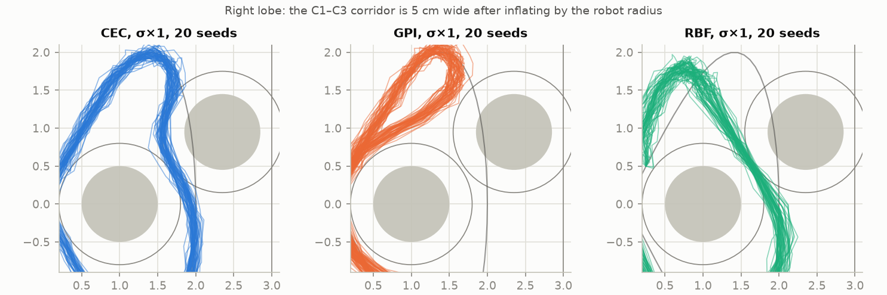
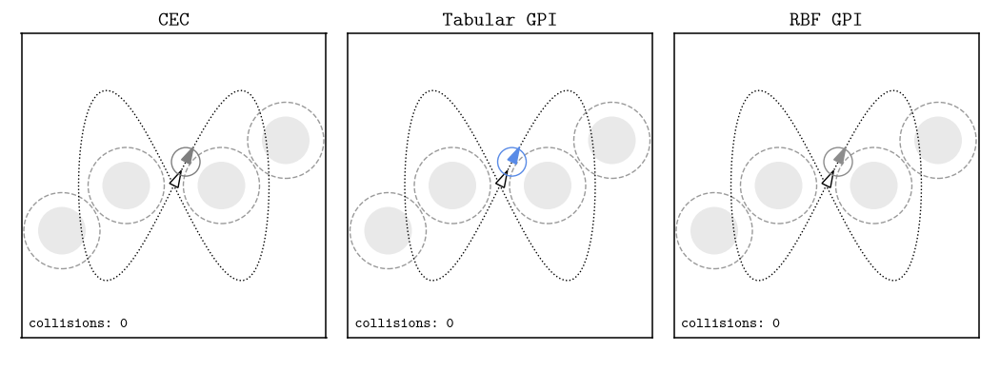
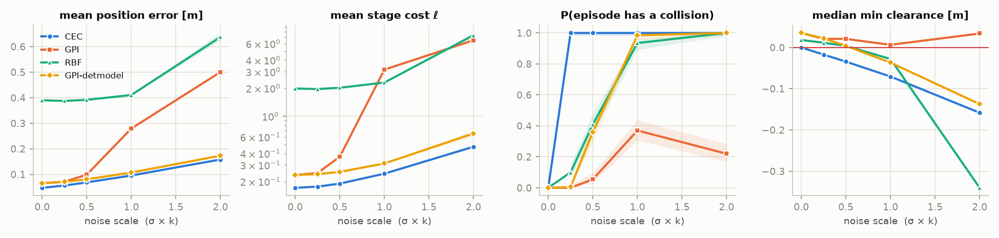
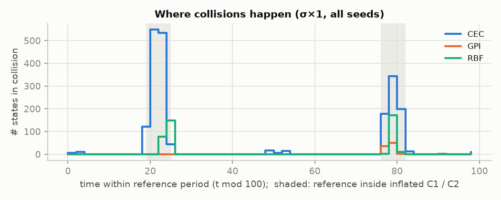
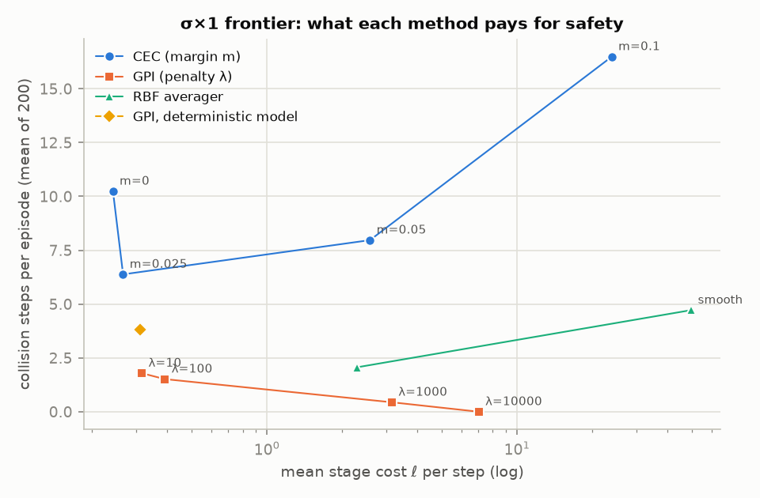
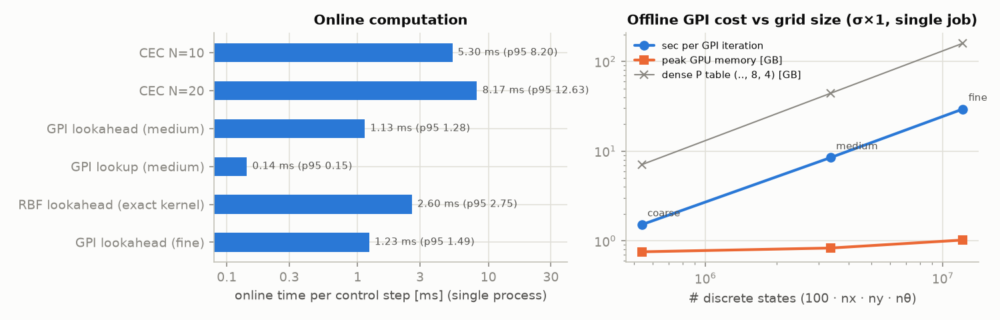
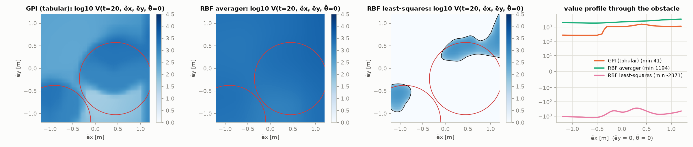

Safe Trajectory Tracking under Motion Uncertainty
The last project of ECE 276B asks for a controller that makes a differential-drive robot follow a figure-eight while avoiding four circular obstacles, with Gaussian noise pushing the robot off its predicted path at every step. The course suggests two ways to solve it: receding-horizon certainty-equivalent control (CEC) and generalized policy iteration (GPI) on a discretized MDP. An optional third is GPI with a radial-basis-function (RBF) value function.
After the course I wanted to understand why these methods behave differently, not just report which one scored better on one noisy rollout. So I re-implemented all three from the starter code and wrote down five hypotheses before running anything. Then I tested them on 200 paired noise seeds per condition, at five noise levels.
Most of the hypotheses held, but two of them held for the wrong reason. The environment contains a 5 cm corridor that the reference forces the robot through, and the results separate into two effects: where inside that corridor a controller sits, and whether it takes the corridor at all. The most useful surprise came from an ablation: GPI's safety does not come from putting Gaussian transitions into the Bellman backup, as I had assumed.
The problem
The robot state is \(x_t = (p_t, \theta_t)\) and the control is \(u_t = (v_t, \omega_t) \in [0.1, 1] \times [-1, 1]\). The kinematics use an exact discretization (\(\Delta = 0.5\) s) plus noise \(w_t \sim \mathcal N(0, \mathrm{diag}(\sigma)^2)\), \(\sigma = (0.04, 0.04, 0.004)\). In terms of the tracking error \(e_t = (p_t - r_t,\ \theta_t - \alpha_t)\), the objective is
\[ V^*(\tau, e) = \min_\pi \ \mathbb E \Big[\sum_{t \ge \tau} \gamma^{t-\tau} \big(\tilde p_t^\top Q \tilde p_t + q (1-\cos\tilde\theta_t)^2 + u_t^\top R u_t\big)\Big] \quad \text{s.t.}\ \ \tilde p_t + r_t \in \mathcal F , \]where \(\mathcal F\) is the square \([-3,3]^2\) minus the obstacles inflated by the robot radius (0.5 + 0.3 = 0.8 m). I used \(Q = 10 I\), \(q = 10\), \(R = 0.1 I\), \(\gamma = 0.95\) for every method.
Three ways to compute the same controller
It is tempting to see CEC, GPI and RBF-GPI as three different answers. They are really three approximations of the same optimal controller, and each one throws away different information:
| method | how it looks into the future | what it throws away |
|---|---|---|
| CEC | re-solves a 10-step NLP (CasADi/IPOPT) at every step | sets future noise to zero while optimizing |
| Tabular GPI | precomputes expected long-run cost under the noisy transitions | continuous states and controls, replaced by a grid |
| RBF GPI | same as GPI, with V compressed into smooth features | fine local structure of V |
How each method is implemented
CEC. Multiple shooting with horizon 10. The obstacle constraints \(\|p_k - c_i\|^2 + s_{ik} \ge 0.8^2\) use slack variables with an exact L1 penalty, so the NLP stays solvable even after noise has pushed the robot inside an obstacle. The NLP is built once, the current state and reference window are parameters, and the solver is warm-started from the shifted previous solution. It runs in about 5 ms per step; IPOPT never failed.
Tabular GPI. The grid has 100 time steps × 29 × 29 position-error nodes (0.1 m spacing near zero, coarser outside) × 40 heading nodes, which is 3.36 M states, with 110 controls. For every (state, control) pair, the next-state mean is combined with a 27-node Gauss–Hermite rule for the noise. Each quadrature node spreads its probability to the 8 vertices of its grid cell by multilinear interpolation. This is a proper finite MDP, playing the role of the handout's \((\dots, 8, 4)\) transition table, but the table is never stored. It is recomputed on the fly on the GPU, which keeps memory under 1 GB, whereas even the handout's compact format would need 44 GB. Collisions enter as a stage cost \(\lambda\, \Phi(-\text{clearance}/\sigma)\): the probability that the next continuous position is outside \(\mathcal F\). Modified policy iteration converges in about 20 iterations of 8.5 s each on an L40S. Online, the controller does a one-step lookahead at the robot's continuous error state.
RBF GPI. Gaussian kernels are centered on a sub-lattice of the grid (450 k weights, 7.5× fewer than the table). Because the centers form a lattice, the design matrix is a Kronecker product \(K_t \otimes K_x \otimes K_y \otimes K_\theta\), so an exact ridge least-squares fit takes milliseconds. That plain least-squares version failed (details below), so the main RBF results use a normalized-kernel averager (Gordon, 1995), which keeps the projected Bellman operator a contraction.
Five hypotheses, written before running anything
- H1. Without noise, CEC tracks best: it optimizes over continuous states, while GPI suffers from grid error.
- H2. As noise grows, CEC's nominal safety degrades: its predicted path is safe, but the real robot gets pushed into obstacles.
- H3. Because GPI puts the noise inside the Bellman equation, its expected cumulative cost should get closer to CEC's under noise. That does not have to mean fewer collisions.
- H4. GPI is much cheaper online and much more expensive offline, and the offline cost grows quickly with grid density.
- H5. RBF saves memory but hurts safety, because smooth features blur the sharp value change at obstacle boundaries.
Protocol: noise scales \(k \in \{0, 0.25, 0.5, 1, 2\}\) multiply \(\sigma\). GPI and RBF are trained separately for each \(k\), with the matching noise model. Every controller sees the same noise draws for a given seed (common random numbers), so every comparison is paired (Wilcoxon, exact McNemar). I report tracking error, stage cost, episode collision probability (Wilson 95% intervals), collision steps, penetration depth, and online compute time. Collisions are checked at the sampled states, as the problem defines them. I also report a continuous-path check along the arc that eq. (1) actually traces between samples.
A 5 cm trap
Before looking at any controller, I computed the geometry and found two things:
- The reference itself passes inside the inflated obstacles C1 and C2, coming within 0.41 m of the center where 0.8 m is required. Perfect tracking means colliding.
- The gap between inflated C1 and inflated C3 is 0.05 m, and the same holds for C2 and C4. The outer side of C1 is blocked by the workspace wall. The robot can squeeze through a 5 cm corridor, or take a large detour around C3 through the middle of the figure-eight.
With 4 cm of positional noise per step, a single sample at the narrowest point of the corridor collides with 51% probability, and a full passage with roughly 2/3. Tracking and safety directly conflict in this corridor.


Results

H1: without noise, CEC is the most accurate (supported, with a catch)
Without noise, mean position error is 0.047 m for CEC, 0.065 m for GPI, and 0.39 m for RBF, and IPOPT never failed. Away from the obstacles the gap is 0.6 cm vs 1.5 cm. About half of GPI's overall 38% gap is a deliberate safety offset, not grid error: GPI passes 3.5 cm from the inflated boundaries instead of 0 cm.
The catch: CEC achieves this by sitting exactly on the constraint (sampled clearance 0.000). Between samples, the arc that eq. (1) actually traces cuts 1.7 cm into the curved boundaries of C1 and C2. The noise-free GPI stays +0.8 cm clear along that continuous path. CEC's accuracy is only compatible with safety under the discrete-time definition of the constraint.
H2: CEC's safety does not degrade gradually; it breaks at once (supported, and stronger)
The nominal optimum lies on an active constraint. Inside the corridors, CEC's plan sits within 1 mm of the boundary for 12–15 steps per episode, and after 48–52% of those steps the real robot ends up in collision: a coin flip, whatever the noise level. So collision probability does not go to zero as noise shrinks; only the depth does. The median minimum clearance is −1.7, −3.4, −7.1 and −15.8 cm at noise ×0.25, ×0.5, ×1 and ×2.

Does tightening the constraints fix it? Only at very low noise. A 2.5 cm margin (half the corridor width) cuts collisions from 100% to 13% at noise ×0.25 at almost no tracking cost. At ×1 every episode still collides, though with fewer collision steps (6.4 instead of 10.2). Beyond that margin the corridor is infeasible, and the 10-step NLP does not find a good detour. With a 5 cm margin it pushes through the corridor on its slack variables. With 10 cm it hovers at the corridor entrance and cuts back through the middle when the reference returns, ending up with 1 m of tracking error.
H3: GPI's expected cost gets closer to CEC's (wrong as stated; the mechanism is different too)
As stated, H3 is wrong. The tracking-cost gap widens with noise: GPI's discounted cost is 1.2× CEC's at noise ×0.25, 1.6× at ×0.5, and 8.7× at ×1. Up to ×0.5, GPI keeps using the corridor and pays for its margin. From ×1 on, it pays for a detour.
Count collisions, though, and the picture flips:
| noise | CEC P(collision) | GPI P(collision) | break-even price per collision step |
|---|---|---|---|
| ×0.25 | 100% | 0% | 2.1 |
| ×0.5 | 100% | 5.5% | 5.2 |
| ×1 | 100% | 37% | 71 |
| ×2 | 100% | 22% | 86 |
The break-even price is GPI's extra stage cost per episode divided by the collision steps it avoids. If a collision step costs more than that, GPI wins, and the original problem treats collisions as infeasible, which makes the price effectively infinite.
What actually buys GPI's safety? I had assumed it was the Gaussian transition model inside the Bellman backup, so I ran a 2×2 ablation at noise ×1:
| noise in the Bellman transition | σ in the collision-risk term | P(collision) | collision steps |
|---|---|---|---|
| yes (27 nodes) | true (4 cm) | 37% | 0.44 |
| no (deterministic) | true (4 cm) | 41% | 0.48 |
| yes | 1 cm | 97.5% | 3.35 |
| no | 1 cm | 98.5% | 3.81 |
With 10 cm grid cells and 4 cm of noise, averaging the noise over a piecewise-linear value barely changes it. What matters is that the one-step collision penalty uses the true noise level, and that dynamic programming propagates that penalty backward in time. It is a different mechanism from the one H3 names, and it points to a fairer comparison: give CEC the same calibrated risk term.
Two further details. First, GPI at noise ×2 is safer than at ×1 (22% vs 37%, paired p = 0.001), because the ×2 policy detours on both lobes instead of one. Second, at noise ×1 GPI detours on the right lobe but always takes the corridor on the left, and all of its collisions happen there. The lobes are not symmetric: the reference's two halves mirror each other across the y-axis, while C2 is the point reflection of C1, so the corridors are entered from different directions. From a λ = 100 policy that uses both corridors, the right corridor is the riskier one per passage (0.33 vs 0.26 collision steps). I haven't isolated the cause. Even on the left lobe, where both methods use the corridor, GPI has 8.7× fewer collision steps than CEC. So in-corridor margin matters as much as route choice.

H4: GPI is cheap online, and its offline cost scales with the grid (supported; matters less than expected)
| online, per step | mean | p95 |
|---|---|---|
| CEC (N = 10) | 5.3 ms | 8.2 ms |
| GPI, one-step lookahead | 1.1 ms | 1.3 ms |
| GPI, pure table lookup | 0.14 ms | 0.15 ms |
| RBF, one-step lookahead | 2.6 ms | 2.8 ms |
Offline, one GPI iteration takes 1.5 s, 8.5 s and 29.5 s for 0.54 M, 3.4 M and 12.2 M states: nearly linear in the number of states, with peak GPU memory flat at about 1 GB. Three caveats matter more than the ratios. All of these times are at least 20× below the 500 ms control period. The table picks the route on its own: pure lookup detours exactly like the lookahead does. But it loses the margin inside the corridor, colliding in 92% of episodes at noise ×0.25 where the lookahead collides in 0%. And the fine grid costs 3.5× more offline than the medium grid for the same closed-loop behavior.

H5: RBF saves memory and costs safety (supported, and the blur is global)
At 7.5× fewer stored parameters, the averager-RBF is less safe than the table at every non-zero noise level: 10% vs 0% collisions at ×0.25, 41% vs 5.5% at ×0.5, and 94% vs 37% at ×1. Averaging spreads the large in-obstacle values into free space. The whole value function is lifted (the minimum over all nodes goes from 24 to 685), and the local difference between corridor and detour is erased. The blur is not confined to obstacle boundaries: even far from any obstacle, noise-free tracking error is 33 cm against the table's 1.5 cm.

The plain least-squares RBF failed differently, and I think this is the most transferable lesson of the project. Every stage cost is non-negative, so \(V \ge 0\), yet fitted policy iteration converged, cleanly and with a stable policy, to a fixed point that was negative on 76% of states. A least-squares projection is not a non-expansion (here \(\|\Pi\|_\infty \approx 10\)). Near the steep collision penalty the fit rings, and the greedy minimum picks exactly the points where the fit undershoots. With the policy held fixed, the same projection leaves only 11% of states negative. The greedy step is what amplifies the error. Switching to an averager, where every fitted value is a convex combination of targets, fixed it immediately.
What actually decided the outcome
- Margin inside the corridor. Most of CEC's collisions come from its optimum sitting exactly on an active constraint, not from its choice of route. GPI keeps a margin sized to the noise, which is why it wins even where both methods take the same corridor.
- Route choice at high noise. From noise ×1 on, the calibrated risk makes the corridor expensive and dynamic programming switches to the detour. That is where GPI's tracking cost jumps. A 10-step NLP never found that detour.
- Calibration, not transition noise. At this grid resolution, the Gaussian transition inside the Bellman backup contributed nothing measurable. The noise-calibrated collision probability contributed everything.
- Two failure modes for approximation. The averager blurs globally. Least squares loses contraction and converges to a biased fixed point.
- "Safe" depends on when you check. Checking only the sampled states, as the problem is posed, lets paths cut into the curved obstacle boundaries between samples.
Caveats
- Information asymmetry. GPI was trained with the true noise level; CEC was given none. The ablation shows that this information is most of GPI's advantage, so the comparison mixes "DP vs. MPC" with "knows the noise vs. doesn't".
- One cost weighting and one γ. GPI depends strongly on the collision penalty λ, which I swept only at noise ×1.
- One reference, one obstacle layout, one initial state. The corridor story is a property of this layout.
- The discounted cost from t = 0 puts 79% of its weight on the first 30 steps, so it barely sees the second half of the figure-eight.
- The simulator is the model plus i.i.d. Gaussian noise, so there is no model mismatch. I did not use MuJoCo here.
- CEC used a single horizon (N = 10; 5 to 25 behaved almost identically without noise) and no multi-start, so "short horizon" and "local solver" are not separated.
What I'll try next
- Give CEC the same information. Add the same calibrated risk term (a chance-constrained CEC) and test whether CEC then matches GPI's safety at lower tracking cost wherever both use the corridor.
- Try to break the corridor story. Sweep the corridor width by moving C3/C4, and force GPI to stay in the corridor, to check whether route choice explains the cost gap as claimed.
- GPI-value-guided MPC. Use GPI's value as CEC's terminal cost, so the global value picks the route and the local NLP supplies precision.
- A safety spec instead of a price. Tune λ by dual ascent (a constrained MDP) to hit a target expected collision count, then compare tracking cost at equal safety.
- Better value approximation. Try a residual RBF on top of a known collision prior, since the averager's error is global rather than only at the boundaries.
Code
Everything is at github.com/jnsungp/safe-trajectory-tracking: CEC, the GPU GPI, both RBF variants, the experiment runner, the analysis scripts, and the summaries behind every number in this post.
Built on the starter code of ECE 276B (Nikolay Atanasov, UC San Diego). The implementation, experiments and write-up were done with the help of an AI coding assistant (Claude Code). Every number was recomputed from the raw rollouts by independent verification passes.